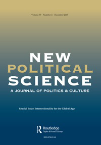
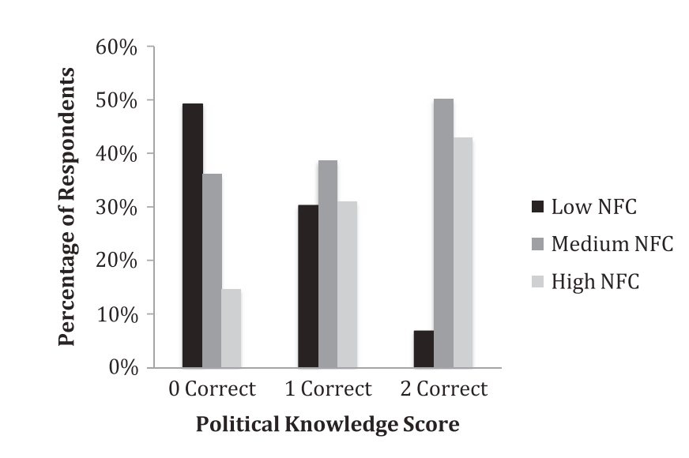
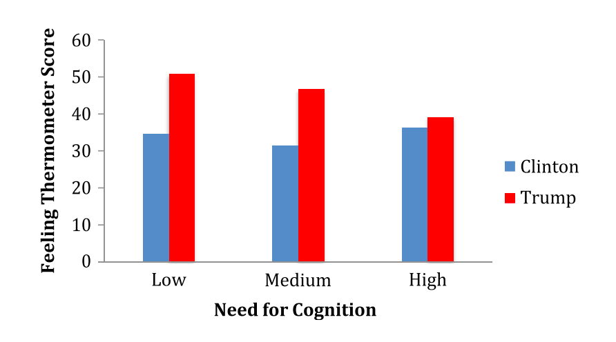
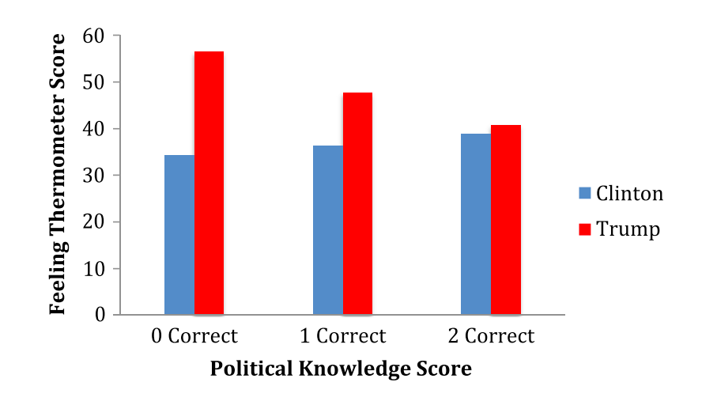
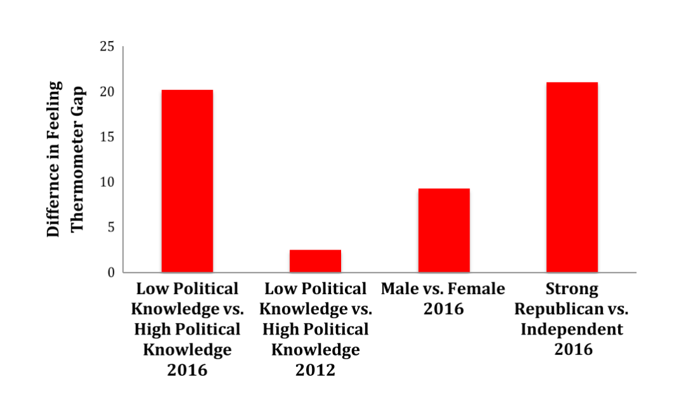
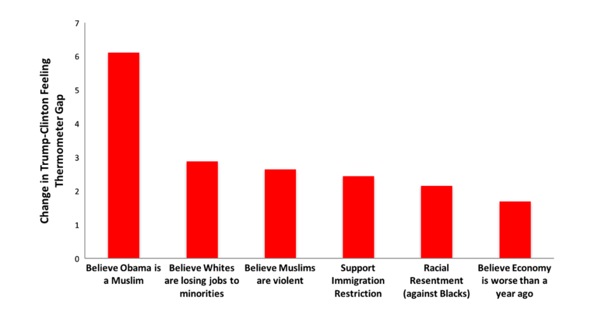

收录于合集

作品简介
【作者】
Richard C. Fording，美国阿拉巴马大学政治科学系教授。其研究兴趣包括公共政策、种族和政治、国家政治、社会运动和定量方法。
Sanford F. Schram，美国亨特学院政治学教授。其研究和学术成果主要集中在福利政治、贫困和相关议题上，尤其是关于美国社会从属人口的奴役问题。
【编译】 扎西旺姆（国政学人编译员，伦敦大学亚非学院）
【校对】 施 榕
【审核】 王泽尘
【排版】 杨 洋
【来源】
****Fording, Richard C., and Sanford F. Schram. “The cognitive and emotional sources of Trump support: The case of low-information voters.” New Political Science 39.4 (2017): 670-686.

期刊简介
 New Political Science 是美国政治学协会下新政治学核心小组（CNPS）的官方期刊。其重点是分析反映出渐进式社会变革的信奉，并处理处于政治学发展探索阶段的课题。该期刊坚持对 “政治 “尽可能广泛的定义，并认为政治和文化的发展不可分离。其2014年的影响因子为0.44。
对特朗普支持的认知和情感来源：低信息量选民的案例
The Cognitive and Emotional Sources of Trump Support: The Case of Low- Information Voters
Richard C. Fording Sanford F. Schram
**内容提要
**
本文为 ‘特朗普从“低信息量选民”(low-information voters)中吸引了前所未有的支持率’的假说提供了实证分析。调查结果显示，他的竞选活动利用了这些选民缺乏对事实认知和推理的特点，使他们更容易依赖对墨西哥移民、穆斯林难民和非裔美国公民的情绪，以及他们对第一位非裔美国总统奥巴马的蔑视。因此，这些特朗普的支持者不太想也无法质疑特朗普看似史无前例的错误陈述、不实之词和谎言。文章讨论了这一现象在特朗普时代及之后对美国政治的影响。
**文章导读
**
01
**简介
**
事实证明，特朗普2016年总统竞选的成功在许多方面都具有历史意义。他是一个众所周知的电视名人，利用富有的房地产开发商和成功商人的形象而过分夸大其名声，乘着选民(大多数是白人和不成比例的男性)支持的浪潮而赢得选举。这些选民希望有一个 “局外人 “进来，动摇政治制度，以解决他们在大衰退后对各种国际和国内威胁日益增长的忧虑。面对这些担忧，特朗普提出的 “让美国再次伟大 “的竞选口号引起了许多人的共鸣，尤其是白人。特朗普通过在竞选活动中妖魔化“外围群体”，从一开始就获得了支持。该活动公然唤起人们对移民(特别是墨西哥人和其他来自中美洲和南美洲的人)、难民(尤其是逃离中东恐怖主义的穆斯林)、非白人(生活在 “内城"inner cities)、妇女(在劳动力和政治体系中崛起)以及其他各种群体的恐惧。他们都被视为可以对特朗普在白人中产阶级公民（尤其是男性）中的支持者基础构成威胁的人。此外，特朗普独特的说话风格，尤其是他的含沙射影，掩饰了自己的仇外心理、种族主义及对性别歧视的呼吁，也使他成为别人所称的 “狗哨 “（dog-whistling）专家。
注：狗哨政治（英语：Dog-whistle politics）指使用编排过的隐语的来向特定人群传递政治信息的手法。对于普通大众来说，这样的信息看起来也是可以理解的。
特朗普作为总统候选人的诸多缺陷，无论是匮乏的政治经验以及治理知识，抑或是明显缺少的道德指引（尤其针对女性）及其作为商人不断规避法律的斑斑劣迹，在为其候选人资格蒙上阴影的同时，并没能阻止他赢得选举。由此，作者提出了一个问题，为什么有那么多人支持他？特朗普支持者中是不是有一个重要群体，他们由于自身对政治的想法和感受而特别容易被利用？本文分析了"低信息量选民 “在创造特朗普以白人支持者为主的独特群体中所发挥的未被重视的作用。在所有人口群体中都有低信息量选民，白人和非白人都有。非白人在大多数情况下并没有被特朗普的候选资格所吸引，但在白人中，2016年发生了一件独特的事： 低信息量的白人选民已经在特朗普选区中不成比例地占据了中心位置。 事实上，研究结果表明，特朗普 能够利用人们对种族和民族焦虑的情感诉求来吸引低信息量的白人选民， 使得他对这些选民的依赖程度远远超过2012年共和党总统候选人米特-罗姆尼（Mitt Romney）。本文首先回顾对2016年特朗普支持率的分析来构建分析框架。接下来，作者介绍了低信息量选民的问题，将其与低教育程度选民的问题区分开来。然后，作者通过数据分析及对调查结果的讨论，进一步揭示了特朗普选举成功的重要性以及对特朗普时代及以后政治的影响。
02
关于特朗普支持者的研究：可悲者（deplorables）及其他人
注：可悲者（deplorables）是2016年希拉里竞选时用来形容特朗普支持者的词汇。
关于特朗普支持者的初步研究指出了各种各样的因素。除了常见的政党和意识形态因素外，还有其他与特朗普独特的竞选活动相关的问题。例如，有研究表明，威权主义导致了对特朗普的支持，信奉威权主义的选民认为他是一个强势的领导人，会强制执行必要的解决方案。其他研究表明，（针对女性的）性别歧视在特朗普的支持者中起到了一定的作用。此外，虽然特朗普的支持率很大程度上来自于白人工薪阶层，但研究表明，特朗普的支持者的收入略高于美国的人均收入，而且他的许多支持者来自中产阶级和上层阶级，这与之前的共和党总统候选人的情况一样。这些因素可能是相互关联的。Ronald Inglehart和Pippa Norris提出了支持这一论点的证据，即客观的经济条件和对个人经济前景的主观焦虑可能加剧了对文化和人口变化的焦虑，从而导致对各种 “外来群体 “的反对，如墨西哥移民、穆斯林难民和非白人居民。他们提出了一个与之相关的问题—对特朗普的支持在多大程度上是美国和发达国家民粹运动（为了捍卫传统文化价值免受外来群体的威胁而做出的反应）兴起趋势的延续，与实证研究中关于特朗普支持者的理解产生了共鸣。
03
低信息量选民，特朗普支持者的认知需求与情感基础
一个尚未被充分研究的话题是，尽管特朗普在竞选期间和竞选结束后谎话连篇，依靠荒诞不经的阴谋论，不断地辱骂和妖魔化对手，以及他为了政治效果而试图诋毁各种 “外围群体”， 但他的支持者在多大程度上对他展现出忠诚？ 为什么他的众多支持者对他表现出高度的宽容？ 其中一种解释是基于党派、意识形态和公共政策的承诺，比如说在堕胎、减税、放松管制和其他标准的保守主义立场上，以及对主流政治失败的日益愤怒，可能会导致人们容忍特朗普作为候选人的诸多不足。然而，随着竞选的进展，他也确实失去了通常站在共和党一边的建制派共和党人、保守派知识分子和公共政策专家的支持。有必要考虑这样一种可能性，即 特朗普的支持有非同小可的一部分是通过在传统的共和党联盟中增加新的成员来实现的，而且无论是从该联盟中留在他身边的人，还是新加入的人，都是由缺乏认知和情感基础的人组成的。 特朗普吸引了共和党以外的人，尤其是受教育程度较低的人。罗姆尼赢得了受过大学教育的人的选票，而特朗普虽然在整个竞选过程中越来越难以赢得这一群体的选票，但是他赢得了没有受过大学教育的人的选票。 教育问题指向了一个更大的问题，即特朗普的支持者对政治的了解程度，以及他们有多大兴趣依靠感觉来做出政治选择。 早在1991年，塞缪尔·波普金（Samuel Popkin）就创造了 “低信息理性”（low-information rationality）一词用来理解相当一部分选民如何在投票站依靠有限的信息做出理性的选择。但最近，右翼电台评论员Rush Limbaugh用这个词来敲打民主党通过利用脆弱的、缺乏知识的"低信息量选民 “来赢得选举的想法，这些选民不会考虑到所有相关的新闻来源。无论如何，特朗普很可能不成比例地从政治信息水平相对较低的白人那里获得支持（不管他们的受教育程度如何）。事实上，低信息量的选民可能是上述运动的重要组成部分，从而导致共和党之外的人们从各处涌来支持特朗普。当他们与共和党内已有的其他低信息量的白人联合起来，就可以形成一个相当大的支持者基础，他们的信息量较少，无法挑战特朗普对事实的错误陈述和歪曲。此外，作者认为，政治知识水平低的人可能也有社会心理学家所称的“低认知需求”。政治知识水平低可能与不愿意依靠思考和批判性思维能力来处理决定支持某个候选人的原因有关。 这些选民可能不需要认知，而是依靠情感需求来做出选择。在缺乏认知需要和政治知识的情況下，选民在決定支持候选人的時候，可能会依赖他们对当前政治气候、各种政治争议和其他情緒反应的感受。政治知识的缺乏和对认知处理的不重视，为情绪在决策过程中占据主导地位创造了机会。 并且，在这种情况下，依赖情感决策的选民更容易被候选人及他人所利用。比如，选民的恐惧与焦虑，甚至说对于被妖魔化群体的仇恨和愤怒都可能会被操纵。 在缺乏信息的情况下，尤其是再加上缺乏依赖认知处理的兴趣时，各种群体和个体可以通过引发的情绪性反应被描述为具有威胁性。
04
**数据分析
**
作者的分析数据来自2016年美国国家选举研究局的初步研究（ANES）。该样本由1200名成年人组成，根据年龄、种族、性别和教育程度而划分，是一个具有全国代表性的样本。作者的主要兴趣在于研究以下变量间的关系 –个人的认知需求、政治知识水平以及对特朗普的支持度。 该调查提供了测量这三个变量的基础。该问卷调查了受访者对于思考的喜好程度（by NFC score）和政治知识水平 (by political knowledge scale)。其结果表明(如图一所示)，两者呈现高度的相关性，即一个人的认知需求这一基本倾向，与一个人的政治知识水平有很大关系。
图一 高、中、低NFC受访者政治知识得分的分布
这与选举有什么关系？为了回答这个问题，作者以"感觉温度计 “（feeling thermometer）来衡量特朗普和希拉里的支持率。值得注意的是，该分析仅限于白人，原因有二。首先，白人几乎代表了样本中所有特朗普的支持者。事实上，在2016年的初步研究中，回答特朗普是他们首选的共和党候选人的人中只有2.8%是黑人。其次，白人是特朗普最具争议性的竞选主题的主要目标，这些主题与种族和移民问题有关。
图二 按认知需求程度预测对希拉里和特朗普的感觉温度
回归分析发现，特朗普的“感觉温度计”得分与NFC和政治知识之间确实存在显着关系。具体而言，相对于NFC和政治知识水平较高的人，认知需求较低或政治知识水平较低的人对川普的感觉相对“更温暖”。有趣的是，这种关系只出现在特朗普身上。无论NFC或政治知识水平高低的人都有可能支持希拉里;而NFC或政治知识水平低的人比那些高水平的人更有可能支持特朗普。但这种差异是否具有实质性意义？由于ANES的调查是在1月份进行的，当时两党还没有选出各自的提名人，因此很难把这种支持率的差异转化为选票。不过，作者可以将低信息量选民和高信息量选民之间的支持率差异，与普遍认为具有政治意义的其他次群体的差异进行比较。此外，还可以将特朗普在高信息量和低信息量选民之间的优势差异与2012年的差异进行比较，当时的共和党候选人是米特- 罗姆尼。为了衡量这些比较，作者提出了新变量，“感觉温度计差”（feeling thermometer gap），即从特朗普的感觉温度计得分中减去希拉里的感觉温度计得分。然后再估计了感觉温度计差和政治知识量表，以及第一个回归模型中使用的变量（党派、意识形态、教育、收入、性别和年龄）之间的关系。图四显示了这个分析的结果。该分析仅限于政治知识的影响。
图三 按政治知识水平预测对希拉里和特朗普的感觉温度

图四 不同分组之间感觉温度计差距的差异
图三中第一项代表了政治知识水平低的受访者和政治知识水平高的受访者之间的特朗普- 希拉里感觉温度计差。这个比较的具体值是20.2，这意味着在政治知识水平低的支持者中，特朗普与希拉里在感觉温度计得分上的差异比在政治知识水平高的选民中高20.2分（对特朗普有利）。因此，在本文的分析中这个数值代表了政治知识影响的大小。图四中呈现的第二项比较为2016年低信息量选民向特朗普摇摆的这种倾向是否不寻常提供了一些见解。通过对比2012年与2016年的调查结果发现，与高信息量选民相比，罗姆尼与奥巴马的感觉温度计差在低信息量选民中仅高出2.6个百分点（对罗姆尼有利）。这种差异在统计学上并不显著。因此，低信息量选民在2016年决定性地支持特朗普，这似乎是2016年大选特有的现象，而不是基于低信息量选民支持共和党候选人的普遍倾向。图四的其余部分报告了其他对子群体的感觉温度计差的差异。当然，这项调查是在1月份进行的，我们知道之后特朗普在女性中的支持率有所下降。尽管如此，政治知识的影响与性别一样能很好地预测特朗普的支持率，这一事实既令人惊讶又令人印象深刻。
05
信息的匮乏让人们基于恐惧与仇恨去支持特朗普
数据显示，低信息量选民（定义为低认知需求或低政治知识水平的选民）对特朗普表示热忱的可能性明显高于高水平的NFC或高政治知识水平的受访者。然而，这提出了最后一个问题。为什么这次大选有那么多低信息量的选民支持川普？作者发现，政治知识的影响通过其对几个更具体的态度和问题立场的影响对特朗普的支持度施加影响，这些态度和立场涉及种族仇恨、对穆斯林的恐惧、对移民的反对和经济。作者利用路径分析技术，确定了政治知识的影响主要集中在以下6项议题上。每个议题都与特朗普而非希拉里的支持率显著相关：(1)认为奥巴马是穆斯林，(2)认为白人的工作机会正在流失给少数族裔，(3)认为穆斯林有暴力倾向，(4)支持限制移民，(5)对黑人的 “种族怨恨”，(6)认为去年（2016年）经济恶化。图5显示了这些政治知识间接影响的相对大小。这些影响的路径代表了特朗普在整个竞选期间演讲中最重要的一些主题。这些发现也指出了低信息量的选民在评价特朗普与希拉里时，是如何容易依赖情感上的需求来决策。低信息量选民因这些原因被特朗普吸引，也有助于解释为什么他们在面对其他诸多不实信息时仍支持他。
图五 政治知识的间接影响（低知识水平与高知识水平）
有可能是人们的高度怨恨使他们对事实不敏感，但也有可能是他们对政治的信息和认知不足，使他们容易被一个以情感为诱饵的竞选活动激起怨恨。然而，还可能是他们在政治方面的信息和认知上的不足，使人们很容易被掠夺他们情绪的竞选活动所激起怨恨。不管是哪种情况，政治信息水平低、认知需求低的选民支持特朗普，都是基于对难民、移民、非裔美国人和奥巴马总统任期的社会和经济忧虑。
06
如何失去一个民主国家
美国被称为民主的实验（democratic experiment），这是一个正在进行中的事业，但还没有完全实现，其潜力的发挥取决于人们的意愿。国家实现更加平等和民主的社会动力值得称道，但这有可能使崇拜 “平等偶像 “的民众成为 “多数人暴政"的牺牲品，进而对独立的批判性思想产生蔑视。虽然平等主义既可以促进健康的反精英主义，但也可以固化不健康的不愿独立思考的模式。与此同时，美国的政治文化中也包含了一种同样矛盾的个人主义倾向，这种个人主义会起到强化不愿受他人思想影响的作用。换句话说，美国政治文化中的正负两个方面都会产生低信息量的选民。不管是故意无知、反精英主义还是极端平等主义，信息量少、认知需求低的选民都很容易被政治上的毒瘤所操纵。本文的发现为“特朗普独特地吸引了来自具有低认知需求的低信息量选民的空前支持率”的假设提供了经验证据。特朗普出人意料的胜利在很大程度上是由于低信息量选民的支持。这一结果在许多方面都令人不安，但它深刻地说明了利用选民群体中政治知识水平低下和对政治思想兴趣低下的竞选活动对国家民主愿望构成的威胁。美国在历史上对平等主义政治文化、反精英主义和蔑视普通人应该被告知如何思考的想法的承诺令人钦佩，但不幸的是，这些承诺有时会自掘坟墓。当这种情况发生时，他们制造的民众授权就不具备真正的民主问责，因为那时人们已经授权精英们根据他们被利用的情绪来行事。如果没有足够的政治知识和进行批判性思考的意愿，被情绪操纵的选民就会失去实施民主问责的能力。被操纵的民粹主义便取代了民主。
**译者评述
**
作者关于选民在低认知需求和政治知识水平状态下，依赖对当前政治议题的情绪反应和想法来决定支持谁的观点，在当下也没有过时。低信息量选民仍然是政治操纵的目标。2016年与2020年特朗普竞选活动的对象主体仍是白人、男性、受教育程度不高的群众，也依旧利用该人群对于种族和民族焦虑的情感诉求来吸引支持率。特朗普始终利用仇外情绪掩饰自己的治理不力。通过“功夫病毒”的说法暗指中国病毒，将其疫情治理的不力移花接木到了族群矛盾之上。特朗普执政期间与美国“主流”价值的激烈对抗，也是迎着其支持者对于主流政治不满情绪而上的。其惯用的推特治国直接煽动选民，推动民粹主义，通过信息的简介性和直接性，迎合了低信息量选民的思考方式。通过高频大量的推特展现自己对于热点议题的关注，及时与群众的情绪进行反馈，也拉近了民众与政府之间的距离[1]。 但如今产生了哪些变化呢？疫情、抗议游行以及民主党的攻势又是否促成了质变呢？针对这一问题，文章合理地解释了低信息量选民对于特朗普斑斑劣迹的容忍，但尚未提出这种“忠诚度”在多大程度上会受到挑战。特朗普迎着群众对于主流政治的愤怒与失望赢得了2016年的选举，但其本身被视为愤怒和失望的来源之时，又会如何发展？事实上，其荒诞执政已经对于其支持者的忠诚度提出了严峻考验，其低信息量选民的支持率也大不如前。而2020年“反特朗普联盟”的口号“只有击败特朗普，美国的癌症才能得到治疗”与2016年特朗普被视作“解决方案”而被推拥上岸的这一形象形成鲜明对比。 当博弈的双方都开始利用低信息量选民易被操纵的特性作为竞选活动的重点时，对其关于热点议题的情绪反应以及重要事项的排序便需要进一步的探索了。
参考文献：
[1]李猛.从说服选民到塑造选民:特朗普“推特选举”的政治心理基础[J].国际论坛,2017,19(04):67-73.
 文章观点不代表本平台观点，本平台评译分享的文章均出于专业学习之用,
不以任何盈利为目的，内容主要呈现对原文的介绍，原文内容请通过各高校购买的数据库自行下载
文章观点不代表本平台观点，本平台评译分享的文章均出于专业学习之用,
不以任何盈利为目的，内容主要呈现对原文的介绍，原文内容请通过各高校购买的数据库自行下载

好好学习，天天“在看”

国政学人
支持学术公益与知识传播
微信扫一扫赞赏作者 __赞赏
已喜欢，对作者说句悄悄话
取消 __
发送给作者
发送
最多40字，当前共字
上一页 1/3 下一页
长按二维码向我转账
支持学术公益与知识传播
受苹果公司新规定影响，微信 iOS 版的赞赏功能被关闭，可通过二维码转账支持公众号。